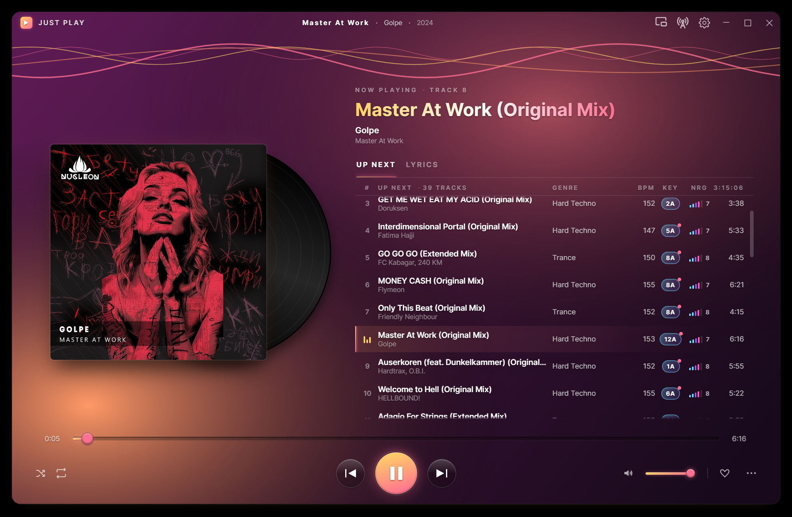
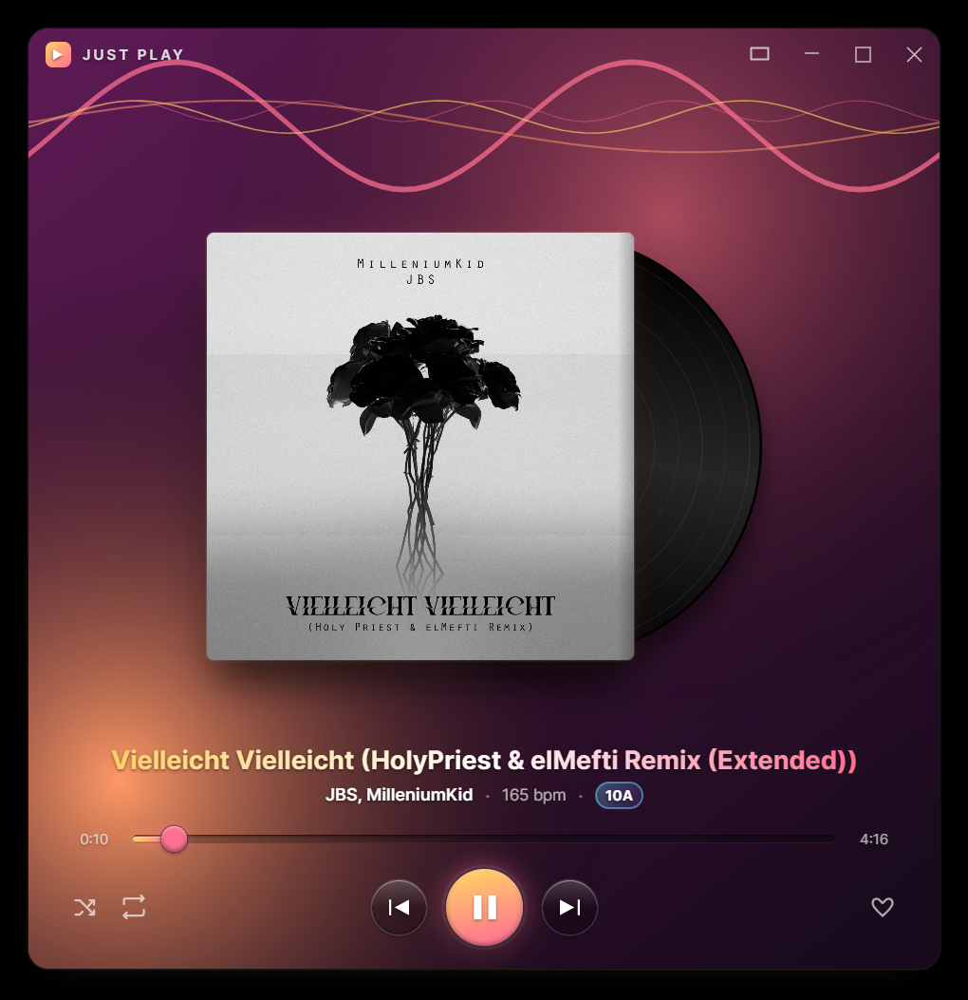
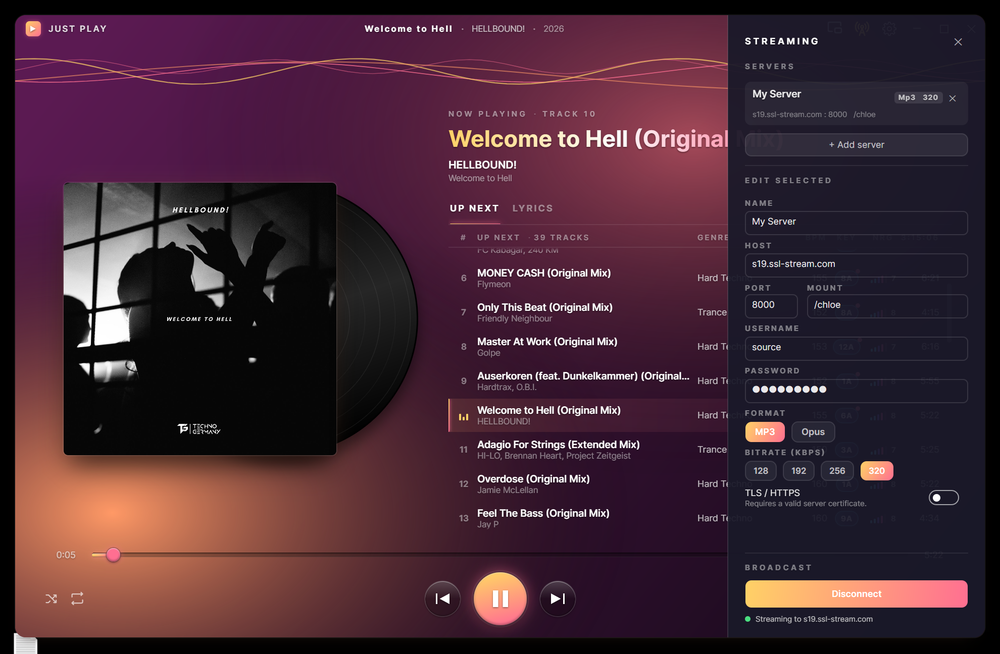
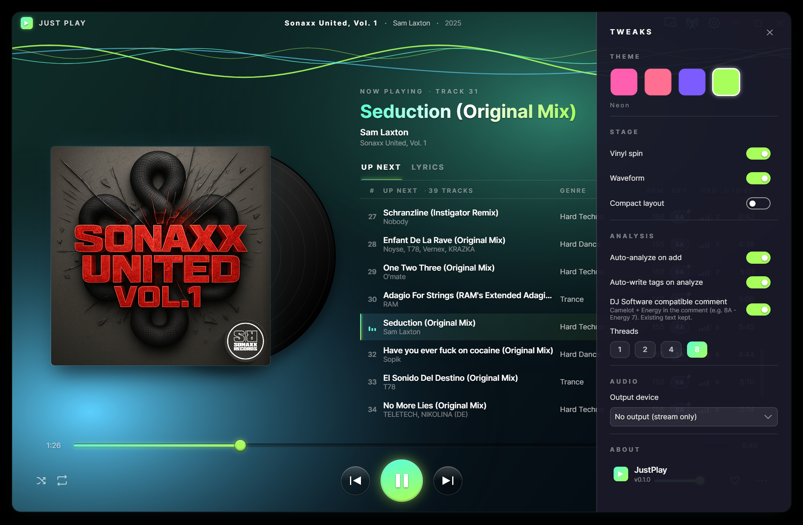

Press play today. Plan your set tonight.
Your everyday music player — and your first-choice tool to prepare your next DJ gig.
Free · Windows · no library, no sign-in, no nag
The look




What it does
The musical key in Camelot notation — read by our own AI model, trained in-house and running fully offline on your machine. No cloud, no GPU. Mix in key, or let JustPlay arrange a smooth-flowing playlist for you.
Tempo and a 1–10 energy score detected on add, so you can order a set by feel and intensity at a glance.
Drop your tracks in and JustPlay sorts them into a set that flows — key, tempo, energy and groove all lined up so each song melts into the next. Sorted to please your ear, or a head start on your next epic DJ set.
The detected key, BPM and energy can be saved straight into each file — so the analysis travels with the track and any other app can read it. Only when you choose to, and every change is undoable.
Broadcast your set straight to an Icecast server — multiple server profiles, MP3 or Opus, with a one-glance on-air indicator.
No library to manage, no scan, no account. Drop files in, double-click, go. Close it and the queue is empty again — just play.
The checklist
What you get
What you'll never get
The idea
Most music players insist on scanning your folders, managing your whole library, and quietly telling you how to listen. But enjoying your music should be the priority — not the housekeeping.
JustPlay does exactly one thing: it plays your music. Everything else is yours. How you keep your collection, whether a track was just downloaded, whether you want a soundtrack for your day or to share your favourites with the world in a live radio stream — all of it is up to you.
Music is wonderful, and it deserves a player worthy of it — one that makes the experience beautiful, not just functional.
You are the conductor and the master of your music.
JustPlay simply plays it — as stylishly as it possibly can.
You listen with your eyes.